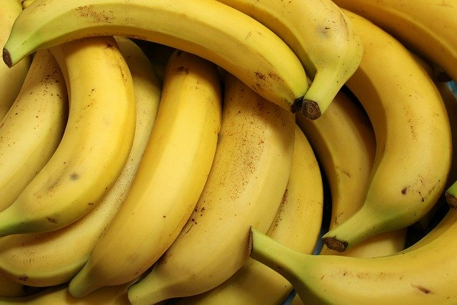

Recipe with Instructions
Recipe
Home
Add-Ins
Ingredients

2 cups all-purpose flour (unsifted)
1 teaspoon baking soda
1/4 teaspoon salt
1/2 cup butter at room temperature
2 eggs
1 cup of granulated sugar
3 mashed ripe bananas
1 teaspoon milk
1 teaspoon vanilla extract